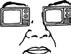

\1\2ğaç\3
Televizyon sağlığınızı nasıl kötü etkiler?

Televizyonu çok yakından seyrettiğinizde değil.
1960’ların sonuna kadar katot ışın tüplerinin kullanıldığı televizyon cihazları çok düşük seviyelerde ultraviyole radyasyon yayardı ve televizyon seyredenlere 2 metreden daha yakından televizyon seyretmemeleri tavsiye edilirdi.
Çocuklar en çok risk altında olanlardı. Çocukların gözleri mesafede meydana gelen değişikliklere çok kolay uyum sağladığından, çocuklar yetişkinlere göre televizyonu çok daha yakından seyredebiliyorlardı.
Yaklaşık 40 yıl önce, Sağlık ve Güvenlik için Radyasyon Kontrolü Sözleşmesi, üreticilerin katot ışını tüpleri için kurşunlanmış cam kullanmalarını zorunlu hale getirerek televizyonları tamamen güvenli hale getirdi.
Televizyonun asıl zararı, yarattığı tembel hayat tarzından kaynaklanmaktadır. Son yıllarda yapılan araştırmalarla, çocuklardaki obezite oranının arttığı, bunun da televizyon seyretmekle doğrudan ilgili olduğu ortaya kondu. Araştırmalara göre çocukların televizyon başında geçirdiği süre, spor yaparak ya da açık hava etkinliklerinde geçirdikleri süreden çok daha fazlaydı.
2004’te Pediatrics dergisinde yayınlanan bir araştırma, günde 2-3 saat televizyon seyreden çocuklarda Dikkat Toplama Bozukluğu (ADD) görülme ihtimalinin diğerler çocuklara göre yüzde 30 daha fazla olduğu sonucuna vardı.
2005’te Nielsen araştırma şirketi ortalama bir Amerikan ailesinin günde 8 saat televizyon başında olduğunu ortaya koydu. Bu on yıl öncesine kıyasla yüzde 12,5’lik bir artıştır ve 1950’lerde ilk kez yapılan televizyon izleme istatistiklerinden beri görülmüş en yüksek orandır.
Amerikan Pediatri Akademisi 70 yaşına gelmiş bir Amerikalının televizyon izleyerek ortalama 8 tam yıl harcamış olacağını hesapladı.